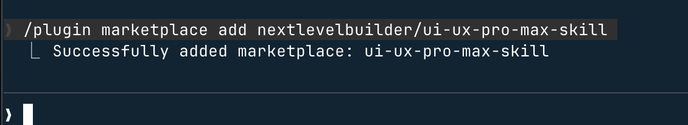
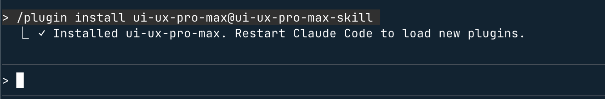

Claude Code Skills Usage Examples
In the previous chapterAgent Skills (agent skills)We have already learned the basic concepts of Skills. In this chapter, we will develop a project using a specific Skill.
There are already many ready-made skills on the market. We can use them directly, and we canhttps://skills.sh/find more skills.
Installation method:
npx skills add <owner/repo>To install ui-ux-pro-max via npx, refer to:OpenCode Skills Usage。
Note:If you are not familiar with npx, you can refer to:npx Getting Started Tutorial
In this chapter, we will introduce UI UX Pro Max, a professional-grade UI/UX SKILL plugin that supports multiple platforms and frameworks.
UI UX Pro Max aims to provide professional UI/UX design intelligence support for cross-platform and multi-framework development.
UI UX Pro Max is essentially a searchable design database containing styles, color palettes, fonts, component suggestions, and UX guidelines, specifically fed to AI coding assistants such as Cursor, Claude Code, Windsurf, etc.
Core Highlights:
- 67 UI styles (from Minimalism to Brutalism, Glassmorphism, Bento Grid, AI-Native, etc.)
- 96 industry color palettes (SaaS, Fintech, Healthcare, Beauty, EdTech...)
- 57 font pairings (curated Google Fonts combinations)
- 25 common chart types (suitable for dashboards)
- 99 UX guiding principles (including accessibility, performance, and interaction standards)
- 100 industry-specific reasoning rules (including anti-patterns)
- Supports 13 technology stacks: React / Next.js / Vue / Tailwind / Flutter / SwiftUI / HTML+CSS / Electron, etc.
How it works:
- Submit requirements: build, design, implement, optimize, or review UI/UX
- Automatic skill triggering: the AI searches internally for UI styles, color schemes, fonts, and UX guideline databases
- Intelligent design recommendations: match suitable design systems based on product type and usage scenarios
- Direct code generation: output UI implementations with correct color schemes, fonts, spacing, and structure according to best practices
Open source URL:https://github.com/nextlevelbuilder/ui-ux-pro-max-skill
Official documentation:https://ui-ux-pro-max-skill.nextlevelbuilder.io/
Installation Method
1. Install via Claude Marketplace (Claude Code)
Execute the following two commands in Claude Code to install directly.
Register the plugin marketplace source:
/plugin marketplace add nextlevelbuilder/ui-ux-pro-max-skill

Install plugin:
/plugin install ui-ux-pro-max@ui-ux-pro-max-skill
After successful installation, restart Claude Code and it can be used:

2. Use CLI (recommended)
Install the CLI globally:
npm install -g uipro-cli # 进入你的项目目录 cd /path/to/your/project # 为对应 AI 助手安装 uipro init --ai claude # Claude Code uipro init --ai cursor # Cursor uipro init --ai windsurf # Windsurf uipro init --ai antigravity # Antigravity (.agent + .shared) uipro init --ai copilot # GitHub Copilot uipro init --ai kiro # Kiro uipro init --ai codex # Codex CLI uipro init --ai qoder # Qoder uipro init --ai roocode # Roo Code uipro init --ai gemini # Gemini CLI uipro init --ai trae # Trae uipro init --ai all # 所有助手
3. Other CLI commands:
uipro versions # 查看可用版本 uipro update # 更新到最新版本 uipro init --version v1.0.0 # 安装指定版本
2. Use npx
npx skills add https://github.com/nextlevelbuilder/ui-ux-pro-max-skill --skill ui-ux-pro-max
5. Install a specific version
After installation, assuming you use it in Claude, execute the following command:
uipro init --ai claude
The search script requires Python 3.x:
# 查看 Python 是否已经安装 python3 --version # macOS brew install python3 # Ubuntu/Debian sudo apt update && sudo apt install python3 # Windows winget install Python.Python.3.12
After installation is complete, the output is as follows:

Then run the command to enter Claude:
claude
We can use/plugincommand to view installed plugins:

pressEscPress any key to exit.
Note: Skills installed via plugins are stored in the directory:～/.claude/plugins/marketplaces。
How to Use
Next, we can directly enter our requirements:
Build a landing page for pet grooming services with a lively and friendly style, and include a booking-oriented call-to-action button.
It will prompt whether to use our installed skill for design; just keep pressing Enter:

Just keep pressing Enter, and it will indicate the completed functionality:

Then check the final result, much better: